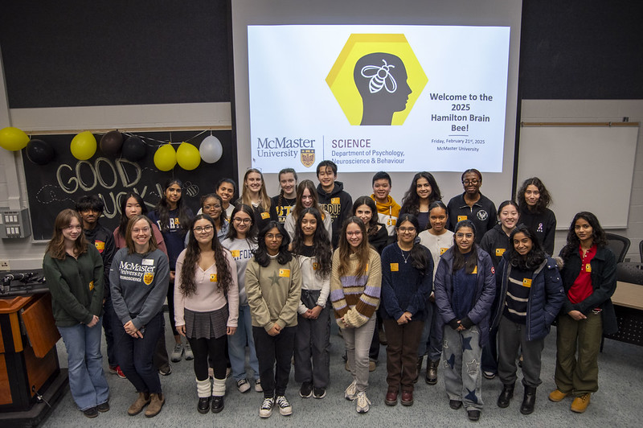

my passion for neuroscience first began in grade 10 while self-studying AP psychology! (got a 5 btw im the goat.) in particular, unit 2: biological bases and behaviour really piqued my interest-- learning the complexities of the brain showed me how much we currently know, and how much is still unknown to us.
coincidentally, that was also the year i learned about the brain bee through ms. proctor! hosted in various cities in canada, the brain bee is a neuroscience competition designed for high school students, pulling questions from free resources provided to you. that year, i barely studied because i thought my AP psychology knowledge would be enough. i was completely wrong and flopped, i think i got barely any questions right!
this year, i once again signed up for the brain bee!
